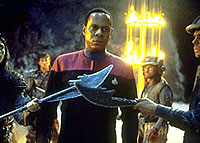
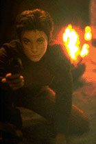
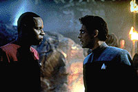

MANCHETE
DO EPISDIO
Interessante
episdio prepara o terreno
para crise religiosa no planeta Bajor
Episdio
anterior | Prximo
episdio
Sinopse:
Data Estelar:
desconhecida.

Sisko,
Kira e Bashir levam Kai Opaka para uma breve visita ao quadrante
Gama, durante a qual ela poder conhecer o Templo Celestial dos
Profetas - a Fenda Espacial.
Do outro lado da Fenda, eles so abatidos por uma rede de
satlites artificiais de defesa em rbita de um planeta
prximo. Ao carem, descobrem que trata-se de uma colnia penal
em estado de guerra, onde ningum morre.
Kai Opaka decide permanecer no local em uma tentativa de
conquistar a paz para os habitantes encarcerados no planeta.
Comentrios:

A
premissa e os bons valores de produo de "Battle
Lines" oferecem um bom retrato do que h de mais
negro na alma humana.
O fato de Opaka ficar para trs para tentar obter a paz entre as
duas faces rivais de prisioneiros trgico, especialmente
porque ela j havia previsto que no retornaria a Bajor, desde o
momento em que chegou em visita Deep Space Nine.
A utilizao de Opaka como um smbolo de no-violncia, em
especial, magistral, mas o mais importante do episdio
fazer Kira enfrentar (com o auxlio da Kai) a violncia que
carrega dentro de 
si
- algo que ela sempre tratou como uma companheira, desde quando
ela podia se lembrar.
O episdio deixa um vcuo de liderana religiosa em Bajor que
ter desenvolvimentos mais a frente.
Citaes:
Opaka - "They know
nothing other than die."
(Eles no sabem de nada alm de morrer.)
Trivia:
 Episdio marcou o desaparecimento de Kai Opaka.
Episdio marcou o desaparecimento de Kai Opaka.
Neste episdio foi perdido o
runabout Yangtzee Kiang.
Duas coisas ficaram pendentes
neste episdio. A primeira, o presente que Opaka oferece a Miles
para sua filha Molly antes de embarcar no runabout. A segunda a
promessa feita por Opaka a Ben de que "seus caminhos iriam se
cruzar novamente". Ambas nunca foram efetivamente retomadas
durante a srie.
Ficha
tcnica:
Histria de Hilary Bader
Roteiro de Richard Danus e Evan Carlos
Somers
Direo de Paul Lynch
Exibido em 26/04/1993
Produo: 013
Elenco:
Avery Brooks como
Benjamin Lafayette Sisko
Ren Auberjonois como Odo
Nana Visitor como Kira Nerys
Colm Meaney como Miles Edward O'Brien
Siddig El Fadil como Julian Subatoi Bashir
Armin Shimerman como Quark
Terry Farrell como Jadzia Dax
Cirroc Lofton como Jake Sisko
Elenco convidado:
Camille Saviola como Kai Opaka
Paul Collins como Zlangco
Jonathan Banks como Shel-La
Majel Barrett como "a voz do
computador"